In-Between-ness
Presence in In-Between-ness — The humor of death and the seriousness of life in my works reveal themselves through objects placed within the opened and still-living body of a fish; these become traces of the clown's presence despite his visual absence. At times, this condition unfolds within the rhythmic play of my characters — a form of entanglement in which desperation and suspension are experienced simultaneously, extending an active state of being in-between. For this reason, I name this condition In-Between-ness.
My use of medium is grounded in gestural stains, sensorial applications of color, and acts of cutting and folding that disrupt the form and meaning of the object. These interventions demonstrate the work's playful engagement with certainties such as death and life, articulating repetition, suspension, and presence within a newly defined conceptual framework.
In developing the visual language of this body of work, I examined multiple compositional approaches and realized that I feel closest to the narrative quality of my objects. At times they appear centrally as single or multiple characters; at other times they exist within constructed spatial environments. This approach aligns with the thematic core of the series, as such concepts have historically been presented through narrative structures in classical texts — either to ease the weight of their certainty upon human perception or to emphasize it.
Works
4 pieces, more in progressThis series explores moments suspended between fear and release, silence and connection, and the search for the possibility of healing. Within these works, hands and fish become the language of this world, carrying gestures of touch, honesty, foolishness, care, and embrace.
Throughout the series, the hand appears as a site of power and action, surrender and supplication, connection and identity, continuously shifting between different bodies. Existing in a state of vulnerability, the figures and creatures embrace one another in acts of empathy, seeking new possibilities for trust, connection, and healing.
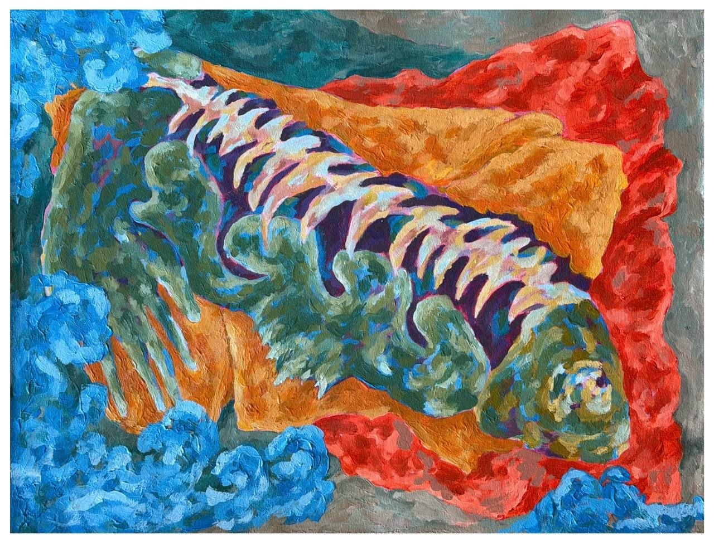

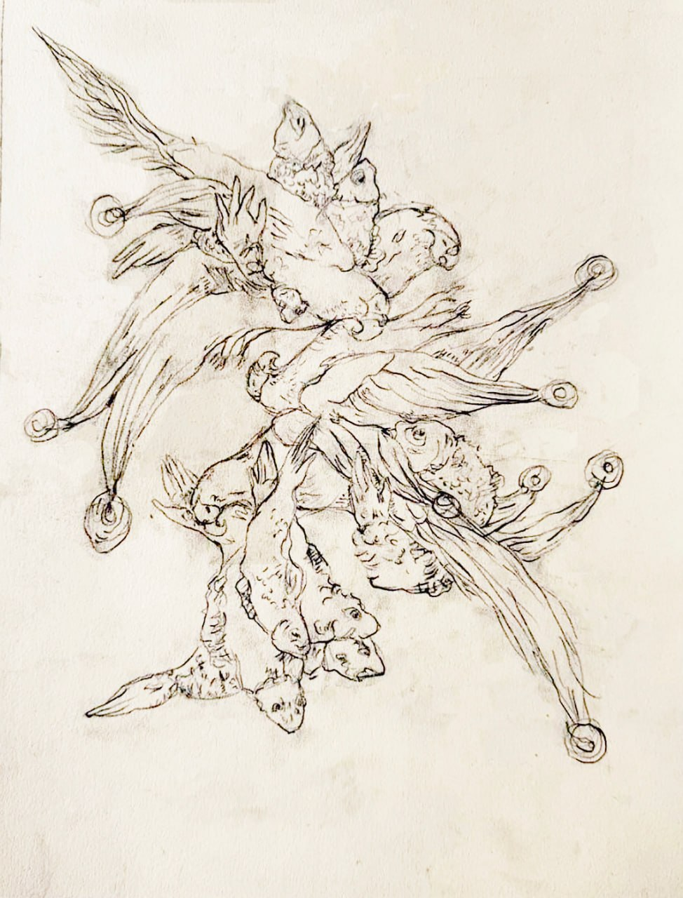
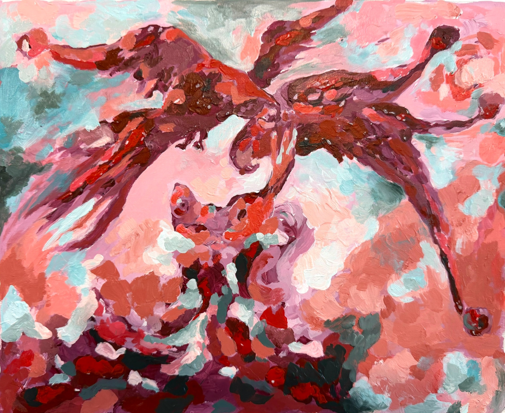
From the depths of the sea, the fish emerges to protect the parrot.
Cut Playing Cards
4 piecesPlaying cards are governed by specific rules of play; yet here we encounter them cut and fractured. It is as though we are seeking to assign them another meaning, or perhaps simply to construct another game. The breaking and folding that alter their static condition feel, to me, like an act of audacity — a gesture of playfulness toward the rules of the game itself. This intervention also reflects my broader interest in displacing objects from their original functions, allowing them to move beyond their prescribed roles and inhabit another possibility.
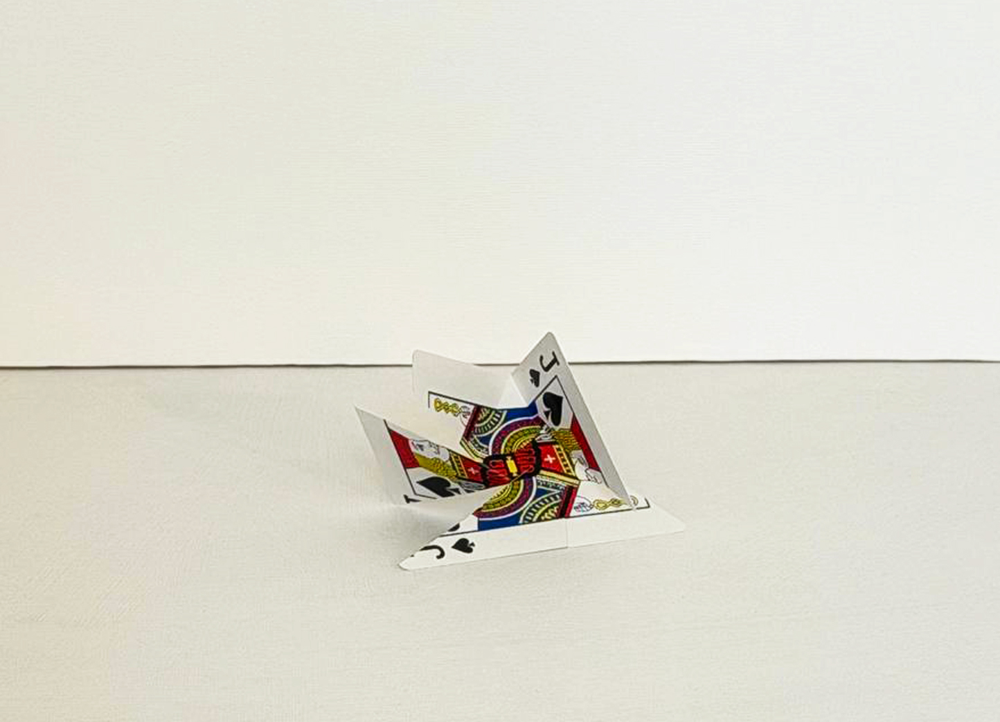

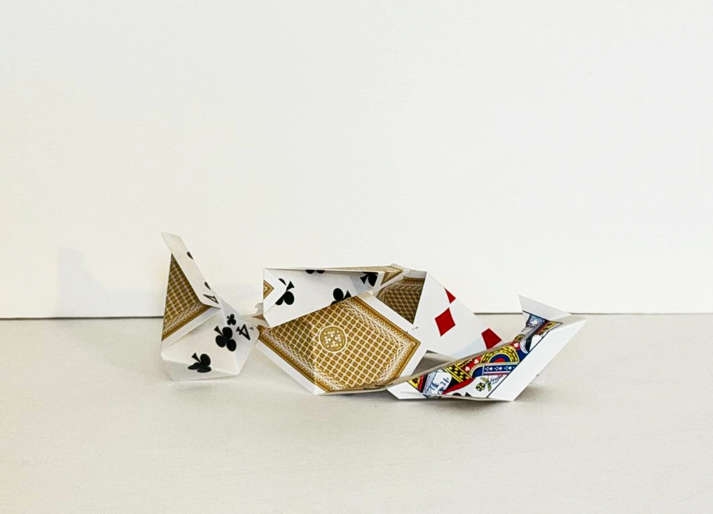
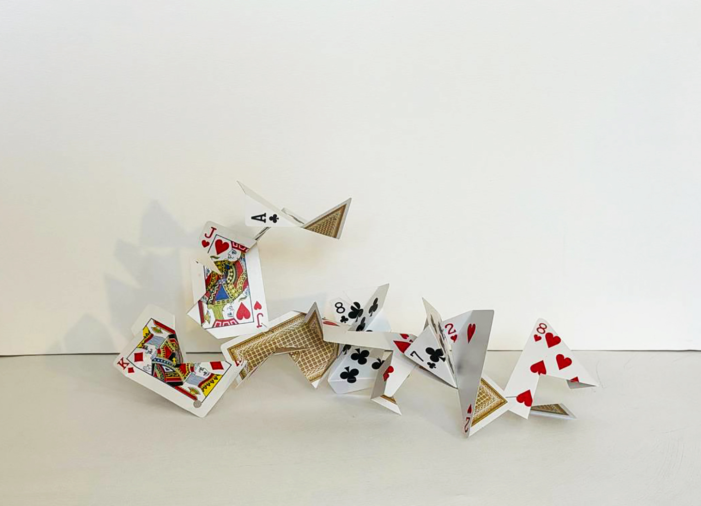
The Clown Section
Studies & progress“Thou shouldst not have been old till thou hadst been wise.”
King Lear, William Shakespeare
The Fool in King Lear. A fool who remains beside King Lear in his state of exile and displays an image of Lear’s inner reality. This reflection requires a provocative and courageous character capable of performing both the comic and reassuring role, and embodying a quality of inevitability within a chaotic world. He possesses a deeper understanding of events behind his mischief and his seemingly unserious, colorful exterior; thus, he assumes, in a sense, the role of the conscience of the play.
“Impotent Wisdom.” The fool dances beside you, smiling. He sees within you — an interior you have remained unable to confront, or a wisdom you have pushed away. He fears nothing, for he knows that in the end everything becomes nothing; and it is this very nothing that he mocks and celebrates in dance.
“Gentle Madness.” He speaks of a provocative courage of a chaotic nature in order to reach you within your confusion and disorientation. The fool demonstrates madness gently — like a joke, like a fall followed by rising again, like perceiving a facet that had remained unseen. Yes, to stand again and to see what has been left unseen requires a courage greater than silence.
The Fool’s Objects. Cards, a hat, gloves, a ball, and a colored handkerchief. In my works, the fool’s objects signify the presence of the fool himself, even though in most of the pieces he does not appear visually. For example, their placement within the body of a fish indicates the depth of their value; as if he has retrieved his sacred objects from the belly of the fish — which, for me, evokes endurance in life — and continues to keep them inside it. A life in which he has endured, one continually shaped by suffering, growth, and joy — experiences of which the fool remains fully aware.
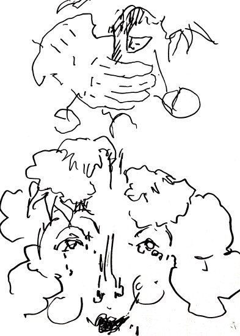
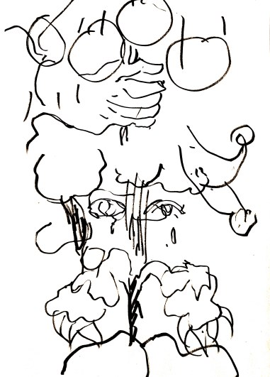
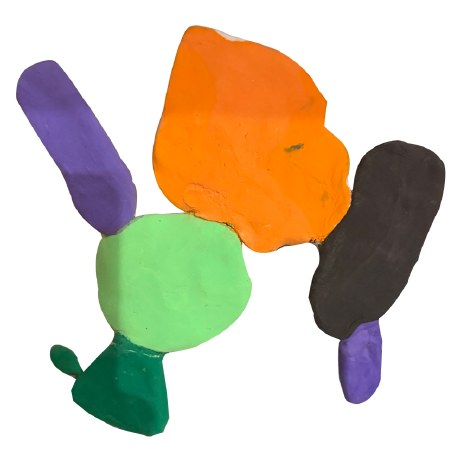
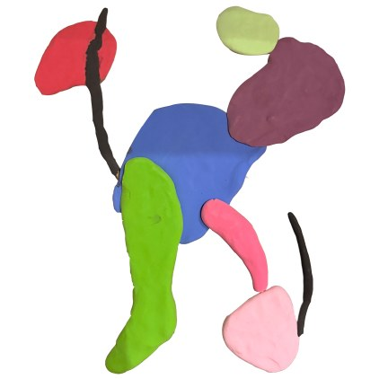
Tried to find points and surfaces and named them, then made these small sculptures with children’s modelling clay.
The Parrot Section
Studies & progress“Die, as I have died, so that you may find release.”
The Merchant and the Parrot, Book I of Rumi’s Masnavi
In the tale of The Merchant and the Parrot in Book I of the Masnavi, the parrot seeks the path to its own liberation and asks the merchant to bring it a gift of the nature of an answer. The response sent by the parrot of India, who feigns death before the messenger, is this: “Your voice has kept you captive. Abandon the sweetness of your song and die, so that you may attain freedom as I have.” The parrot follows this counsel, frees itself from the bondage of its admirer, and imparts a profound lesson: that the freedom of the soul and eternal life lie in release from worldly attachments, and from the station of both hearing praise and offering it.
“Captivity.” I have always seen parrots in cages, rewarded in exchange for their singing and their charm, as though they had never suffered from captivity. At times, the parrot resembles a clown, ensnared in its own jokes, clinging to the cage of its own life out of fear of freedom.
“Suspension in the Moment of Becoming.” The parrots that have died, or that lie in a half-living state among the fish and their sentient, caressing tails, signify to me a tending and a preparation for passing — an exodus from sorrow and captivity into a renewed life and a new vitality. It is, in a sense, a suspended space between sleep and spiritual awakening; and the fish, until the moment of the parrots’ awakening, never cease assisting them through discovery and love.
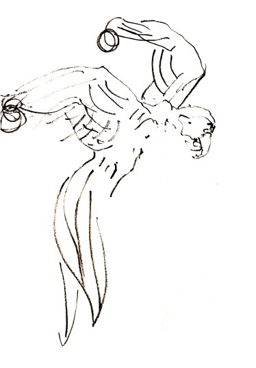
Practice & Process
OngoingCutting paper to make a new perspective to draw from; trying new techniques and materials to understand the work more fully; finding points and surfaces and naming them. The sketchbooks, storyboards and colour studies below trace the early formation of the paintings, and are as much part of the work as the finished canvases.
Selected sketchbook, 2024–2025
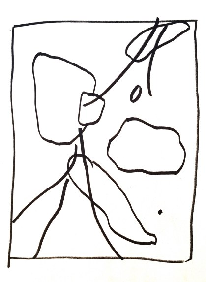
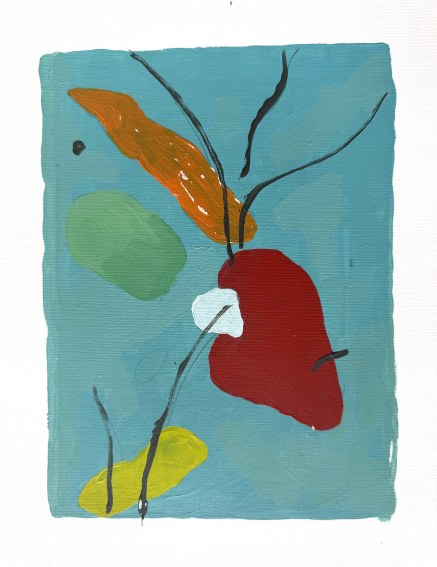
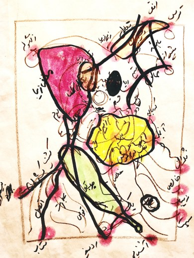
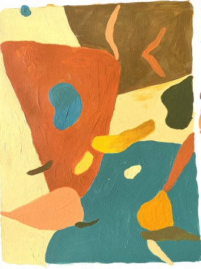
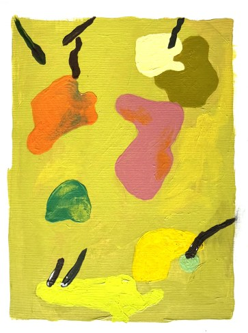
Storyboards
Drawn from one scene of a film, working through the composition as a form of practice.
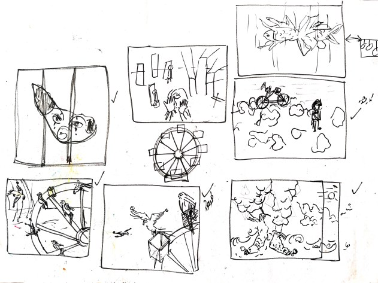
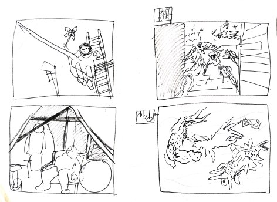
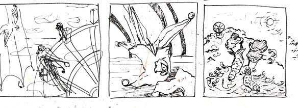
Preliminary sketches & colour studies
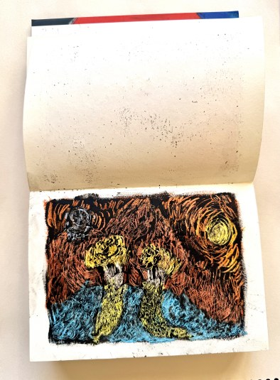
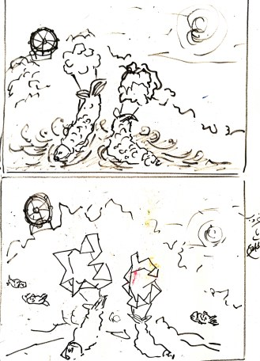
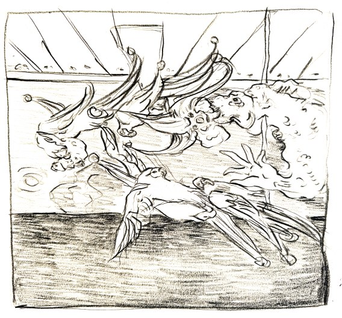
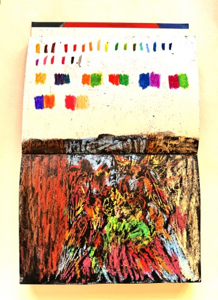
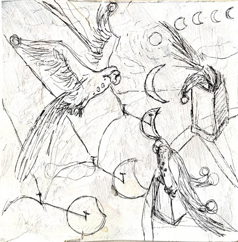
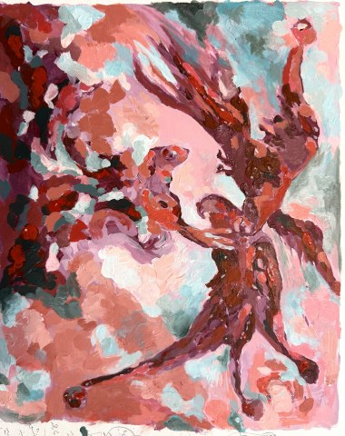
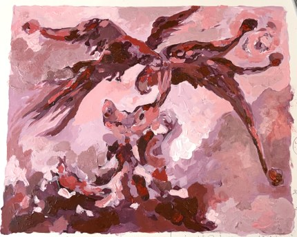